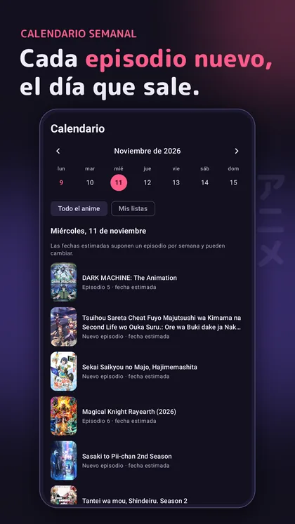
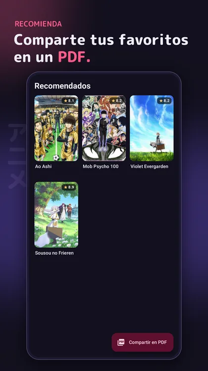
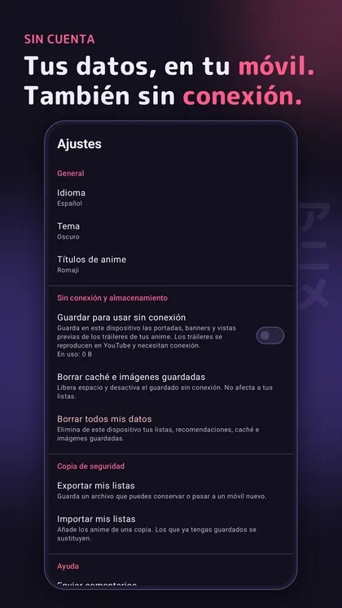

AnimeWatchlist
¿Qué anime sale hoy? ¿Por qué episodio ibas? Te lo dice en un toque.
App Android nativa para llevar tus listas de anime (pendiente, viendo, abandonado y terminado) con el progreso por episodio, un calendario semanal de estrenos y dónde ver cada serie. Usa el catálogo de Kitsu, no pide cuenta y guarda todo en el dispositivo.
- Calendario semanal
- Sin cuenta
- Funciona sin conexión
- ES / EN
La app está en prueba cerrada en Google Play: escríbeme con tu cuenta de Google y te doy acceso.


✦ Lo que puedes hacer
Por qué te va a gustar AnimeWatchlist
Cada episodio nuevo, el día que sale
Elige un día y mira qué estrena episodio, de toda la temporada o solo de tus listas. Si la fecha no está confirmada, la app te lo dice.

Todo tu anime, en su sitio
Viendo, Pendiente, Terminado o Abandonado. Suma episodios con un toque y ponle tu nota del 1 al 10.
Dónde verlo, sin buscar
Cada ficha trae sinopsis, tráiler, temporadas relacionadas y en qué plataformas está.

Recomiéndalo en un PDF
Marca tus favoritos, escribe por qué y compártelos con tus amigos en un PDF listo para enviar.

Tus datos, en tu móvil
Sin cuenta. Guarda las imágenes para usarla sin conexión, haz copia de tus listas y bórralo todo cuando quieras.
Capturas de la versión 1.1
desliza →
-
Calendario semanal de estrenos, con fechas estimadas marcadas. -
Listas con el progreso por episodio. -
Ficha con dónde verlo, progreso y nota personal. -
Recomendados que se comparten en PDF. -
Ajustes: sin conexión, borrado de datos y copia de seguridad.
¿Te apetece probar AnimeWatchlist?
La app está en prueba cerrada en Google Play: escríbeme con tu cuenta de Google y te doy acceso.
{ } Bajo el capó
Cómo está hecha
Para quien quiera saber qué hay detrás: el problema, la arquitectura, código real y las decisiones que tomé.
- versión actual
- 1.1.0
- versiones por fases
- 8
- idiomas
- ES / EN
01 El problema
Quien sigue varias series a la vez acaba con el progreso repartido entre notas y capturas, sin saber qué día sale cada episodio ni dónde verlo legalmente.
02 Un fragmento del código
/**
* The anime airing now, kept in a file. Loading them takes about fifteen requests to Kitsu, so the
* calendar shows the saved copy at once and only asks again when that copy is a few hours old.
*/
class AiringRepository(
private val catalog: AnimeCatalog,
private val file: File,
private val json: Json,
private val now: () -> Long = System::currentTimeMillis,
) {
@Serializable
private data class Snapshot(val savedAt: Long, val animes: List<Anime>)
/** The saved copy, however old, or null when there is none or it can't be read. */
suspend fun cached(): CachedAiring? = withContext(Dispatchers.IO) {
try {
if (!file.exists()) return@withContext null
val snapshot = json.decodeFromString<Snapshot>(file.readText())
CachedAiring(snapshot.animes, fresh = now() - snapshot.savedAt < MAX_AGE_MS)
} catch (_: IOException) {
null
} catch (_: SerializationException) {
null
} catch (_: IllegalArgumentException) {
null
}
}
/** Asks Kitsu again and replaces the saved copy. Throws [IOException] without a connection. */
suspend fun fetch(): List<Anime> {
val animes = catalog.airing()
withContext(Dispatchers.IO) {
try {
val temp = File(file.parentFile, "${file.name}.tmp")
temp.writeText(json.encodeToString(Snapshot(now(), animes)))
temp.renameTo(file)
} catch (_: IOException) {
// Not saving only means the next visit loads from the network again.
}
}
return animes
}
// …
private companion object {
const val MAX_AGE_MS = 6L * 60 * 60 * 1000
}
}
03 Qué he construido
- Kotlin y Jetpack Compose con Room, DataStore, Navigation Compose, Coil 3, OkHttp y kotlinx.serialization.
- Fuente de datos elegida tras comparar APIs (Kitsu frente a AniList), con la investigación documentada en el repositorio.
- Calendario semanal con todo el anime en emisión o solo tus listas. Cuando Kitsu no da la fecha estima un episodio por semana y lo indica en pantalla.
- Caché de 6 horas con escritura atómica para que el calendario abra al instante, y refresco por lotes al abrir solo de los anime desactualizados.
- Sinopsis traducidas en el dispositivo con ML Kit y géneros traducidos con una tabla propia.
- Recomendados exportables a PDF, copia de seguridad de las listas e imágenes guardadas para usar la app sin conexión.
- Banner de AdMob con el formulario de consentimiento de Google (UMP). No enlaza webs sin licencia, para cumplir las políticas de Google Play.
- Ocho versiones por fases (de la 1.0.0 a la 1.1.0), con una rama por issue y pull requests a develop.
04 Decisiones y por qué
- Kitsu en lugar de AniList o MyAnimeList. Antes de escribir código leí sus términos: AniList prohíbe expresamente los trackers de anime y MyAnimeList exige permiso escrito para apps con ingresos. Todo el acceso pasa por una interfaz (AnimeCatalog), así que cambiar de proveedor afecta a una sola clase.
- Si Kitsu no da fecha de estreno, se estima un episodio por semana y la pantalla lo dice. Prefiero una estimación honesta a un calendario vacío o a una fecha inventada.
- Traducción de sinopsis en el dispositivo con ML Kit. Kitsu casi solo tiene textos en inglés; así no se envía nada a un servidor y el modelo (unos 30 MB) solo se descarga si usas la app en español.
- No se enlazan webs que emiten anime sin licencia; el botón (+) hace una búsqueda en Google. Google Play lo prohíbe y pondría en riesgo la cuenta de desarrollador.
Transparencia: el estado indicado arriba refleja el roadmap del proyecto. El repositorio es privado porque la app está en Google Play; el fragmento de código es literal y puedo enseñar el resto en una entrevista.